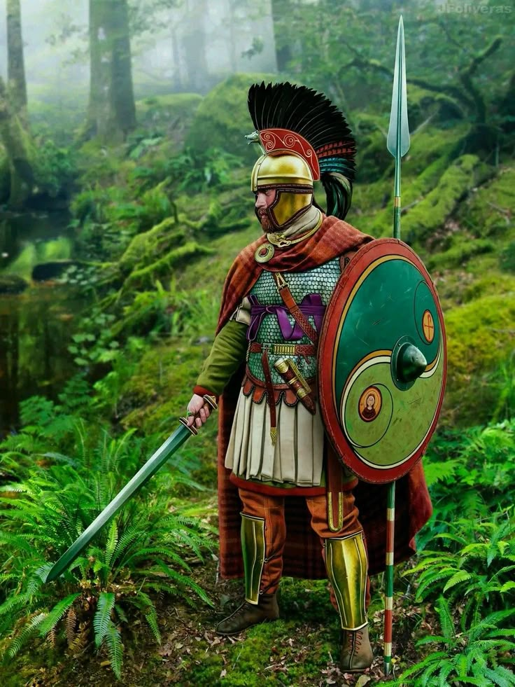

-uma sociedade pós sua glória como província-
Sociedade e cultura romano-celta

A Britânia sub-romana é o período que se segue à retirada das legiões romanas da província da Britânia, tradicionalmente datada de 410 d.C., até a consolidação dos reinos anglo-saxões no século VII. Esse intervalo de tempo é marcado por uma mistura de elementos romanos, celtas e germânicos, criando uma sociedade híbrida e instável.
A retirada das legiões
A retirada das legiões romanas da Britânia ocorreu por volta de 410 d.C., quando o Império Romano, enfraquecido por crises internas e externas, não conseguiu mais sustentar sua presença nas províncias periféricas. Com o império enfrentando invasões de povos germânicos e outras ameaças, o imperador Honório ordenou que as legiões se retirassem da Britânia, deixando os britânicos para se defenderem sozinhos. Isso marcou o fim do domínio romano na região, levando ao período conhecido como a Idade das Trevas na Britânia, caracterizado pela instabilidade e pelo enfraquecimento das estruturas políticas romanas.
Imperador Honório
SEILA
Rei Arthur
ou
Duque Bellorum
O Rei Arthur é uma figura lendária que, embora cercada de mitos, pode ter tido uma base histórica. Ele é amplamente conhecido por sua liderança e pelos feitos extraordinários associados à Távola Redonda, aos Cavaleiros e à busca pelo Santo Graal. Historicamente, acredita-se que Arthur tenha sido um líder militar britânico que viveu entre os séculos V e VI, período pós-romano, quando a Grã-Bretanha estava sendo invadida por povos germânicos, como os saxões. Embora não haja evidências concretas de sua existência, Arthur aparece em diversas crônicas e textos medievais, como na obra *História Regum Britanniae*, de Geoffrey de Monmouth, onde sua figura é fortemente mitificada. Alguns estudiosos sugerem que Arthur pode ter sido um comandante real que unificou tribos celtas para resistir aos invasores. Ao longo dos séculos, a história de Arthur foi enriquecida por romances cavaleirescos, que ajudaram a moldar a imagem do rei como um herói idealizado, símbolo de honra, coragem e lealdade.